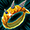
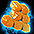

メニュー
トップ >>
モンスター >>
ウィークリー討伐 [アスタロト]
ウィークリー討伐システムのうち最も低レベル帯のボスで、討伐成功で 電鱗のリング (専用指輪) と
稲妻の鱗が入った袋 (リング強化素材) を100%獲得できます。経験値も 15億 と高めです。
2023年6月21日 (ver 0.0792) 実装
※ ウィークリー討伐システム自体もこのバージョンで追加されました
入場方法
クリア報酬
電鱗のリング（オプション）
関連ページ
※ クリア時に戦闘不能だと経験値および報酬は獲得できません。さらに挑戦権だけが消費される扱いになるので注意。
※ シュラグ／ゲリオ／ファルコンと違い、初回討伐時の専用称号は公式パッチノートには記載されていません。
オプション変換は冒険家協会バー NPC「討伐騎士団長」(座標33,66) で行います。
＜変換コスト＞
※ 不要になった電鱗のリングをNPC「タポ」「トゥンガ」で ユニーク分解 しても20個獲得可能。
＜オプション一覧＞
オプション枠は固定リストから抽選。各オプション3つの数値帯のうち1つが登場します。
出典: 公式お知らせ「Ver0.0792アップデート 新規追加内容のご紹介」(2023年6月21日)
ウィークリー討伐 [アスタロト]
Lv800以上で挑戦できる週1回入場制のボス討伐コンテンツ。ウィークリー討伐システムのうち最も低レベル帯のボスで、討伐成功で 電鱗のリング (専用指輪) と
稲妻の鱗が入った袋 (リング強化素材) を100%獲得できます。経験値も 15億 と高めです。
2023年6月21日 (ver 0.0792) 実装
※ ウィークリー討伐システム自体もこのバージョンで追加されました
入場方法
クリア報酬
電鱗のリング（オプション）
関連ページ
入場方法
| 制限Lv | 800〜 パーティーまたはソロ 週1回入場可能（毎週月曜00:00リセット） |
|---|---|
| 入口 | 冒険家協会バー NPC「討伐騎士団長」（座標33,66） ※ 旧入口の「希望と絶望の境目」NPC「騎士団長ディラン」/「神獣の野原」NPC「クリド」からは入場不可 |
| 入場枠の共有 | アスタロト / シュラグ / ファルコン / ゲリオ の4ボス共通枠 どれか1ヶ所で討伐に成功すると、月曜0時のリセットまで 4ボスすべて入場不可 ※ 入場のみで討伐失敗の場合は再挑戦可 ※ ファルコンが追加される前（〜2023年12月）は3ボス共通枠でした |
| パーティー条件 | 全員が入場条件Lvを満たし、ログイン中で同一マップにいる必要あり ※ 戦闘不能のままパーティーが討伐成功した場合、本人は挑戦権を消費した扱いとなり月曜0時まで再入場不可 |
クリア報酬
| 確定枠（100%獲得） | ||
|---|---|---|
 |
電鱗のリング | アスタロト専用のエリアボスリング（下記詳細）。9番目のリング枠（転生指輪の右上枠）に着用 |
| 稲妻の鱗が入った袋 | 使用すると  稲妻の鱗 12〜15個 を獲得（リングのオプション変換に使用） |
|
| 経験値報酬 | ||
| — | 基本 | 15億 |
| — | ポータル・スフィアー所持 | 30億 |
| — | ポータル・スフィアー＋パワーキット所持 | 45億 |
※ クリア時に戦闘不能だと経験値および報酬は獲得できません。さらに挑戦権だけが消費される扱いになるので注意。
※ シュラグ／ゲリオ／ファルコンと違い、初回討伐時の専用称号は公式パッチノートには記載されていません。
電鱗のリング（オプション）
獲得時にランダムで3つのオプションが付与されます。各オプションの数値は 専用財貨「稲妻の鱗」 を消費して最大3回まで再変換できます。オプション変換は冒険家協会バー NPC「討伐騎士団長」(座標33,66) で行います。
＜変換コスト＞
| 1回目 | 2回目 | 3回目 |
|---|---|---|
| 稲妻の鱗 ×10 2億ゴールド |
稲妻の鱗 ×30 3億ゴールド |
稲妻の鱗 ×60 5億ゴールド |
※ 不要になった電鱗のリングをNPC「タポ」「トゥンガ」で ユニーク分解 しても20個獲得可能。
＜オプション一覧＞
オプション枠は固定リストから抽選。各オプション3つの数値帯のうち1つが登場します。
| オプション | 高 | 中 | 低 |
|---|---|---|---|
| 敵に感電を与える（10%でダメ対比n%感電ダメ5秒付与） | 5% | 3% | 1% |
| PVP状態時のダメージ増加 | 5% | 4% | 3% |
| 敵物理致命打抵抗の低減 | 8% | 4% | 2% |
| 知恵 +1/Lv | +1/Lv3 | +1/Lv4 | +1/Lv5 |
| ◆水属性ダメージ強化 | 12% | 8% | 4% |
| ターゲットの◆水抵抗弱化 | 6% | 4% | 2% |
| ◆光属性ダメージ強化 | 12% | 8% | 4% |
| ターゲットの◆光抵抗弱化 | 6% | 4% | 2% |
| 攻撃速度増加 | 7% | 5% | 3% |
| 物理回避率増加 | 4% | 3% | 2% |
| 物理致命打発動確率増加 | 9% | 7% | 5% |
| 防御力増加 | 30% | 10% | 5% |
| 最大HP増加 | 20% | 7% | 4% |
| 最大CP増加 | 15% | 12% | 9% |
| 力上昇 | 25 | 10 | 5 |
| 敏捷上昇 | 25 | 10 | 5 |
| 健康上昇 | 25 | 10 | 5 |
| 知恵上昇 | 25 | 10 | 5 |
| 知識上昇 | 25 | 10 | 5 |
| カリスマ上昇 | 25 | 10 | 5 |
| 運上昇 | 25 | 10 | 5 |
関連ページ
ウィークリー討伐は4種のボスから1つだけ毎週挑戦できる仕組みで、それぞれ専用リングを獲得できます。| ボス | 専用リング | 関連ページ |
|---|---|---|
| アスタロト | 電鱗のリング | このページ |
| シュラグ | 炎魔のリング | エリアボス [シュラグ] |
| ファルコン | 熱風のリング | ウィークリー討伐 [ファルコン] |
| ゲリオ | 堕天のリング | エリアボス [ゲリオ] |
- 討伐システム（デイリー） — 4ボス共通の1日1回入場、ユニーク装備＋バッジ素材ドロップ
- 討伐システム（2021〜）の概要
出典: 公式お知らせ「Ver0.0792アップデート 新規追加内容のご紹介」(2023年6月21日)